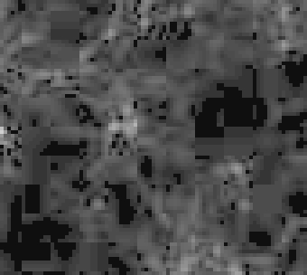
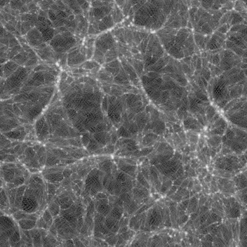

The CUBE cosmological model generates a series of mass-distribution estimates over a cube several hundred megaparsecs across. The interesting thing is not the mass but the mass contrast; a difference if you will.
It’s hard to imagine so you want to visualize this. Using python I eventually discovered a few things about visualization of several dozen cubes of about 160MB each (352 elements on a side, single-precision).
Let’s start with one sample mass contrast file generated by CUBE.
$ python3.7
w=352
h=352
import numpy as np
from PIL import Image
## point at the projection of delta_L, divergence
fn='/home/xr/output/universe2/image1/delta_L_proj_1.bin'
delta_L=np.fromfile(fn,dtype=np.float32)
delta_L
##array([-0.5279368 , -1.5514972 , -1.016077 , ..., 0.10038742,
## 0.10409216, 0.1579786 ], dtype=float32)
delta_L_pic=np.reshape(delta_L,(w,h))
DLb=Image.fromarray(delta_L_pic,"L")
DLb.save('delta_L_1.jpg')
It looks like this:
While you can see some structure to the left of the top middle, it is basically greyscale. This image is supposed to be the density contrast at z=50 (early in the simulation) and is the average of a slab 50 slices deep.
However, it has issues:
I suspect the image formation step Image.fromarray may be the culprit,
so lets reprocess making the steps (normalize, scale 0..250, format
) explicit:
def toImage2(inarr,ofile):
tinarr=(inarr-np.min(inarr))*250/(np.max(inarr)-np.min(inarr))
tsarr=tinarr.astype('int8')
Image.fromarray(tsarr,'L').save(ofile)
toImage2(delta_L_pic,"delta_L_1_scaled.jpg")
And the result is different and looks better:
Note this is auto-scaled so the contrast is enhanced. The values range from about -4 to +4. There are no small features, just larger ones.
The data generated by CUBE is data cubes of (in this case) 352 elements on a side. The data is compressed with a scaling function and so we need a program to read, decompress, calculate the density contrast, and write that out. Input size is about 174MB and so the output is too.
The program runs for each z value calculated, from 50.0 down to 0.0 in scaled steps, so 50, 9, 5.667, 4, 3, 2.333, 1.857, 1.5, 1.222, 1.000, 0.818, 0.667, 0.538, 0.429, 0.333, 0.250, 0.176, 0.111, 0.053, 0.000.
That is a lot of data: 20 x 174MB. So, of course, let’s make a movie!
But first, a few slices, and averaged slices through the data:
./export_bin.x
This generates a delta_c (full size) and delta_c_8 (average of 30 slices) for each z value. These are about 174MB and 0.1MB each.
First, process z=0
ng=352
fn='/home/xr/output/universe2/image1/0.000_delta_c_1.bin'
deltac=np.memmap(fn,dtype='float32',mode='r',shape=(ng,ng,ng))
dli=np.sum(deltac[:50,:,:],axis=0,dtype='float64')
dlp=deltac[50,:,:]
toImage2(dli,'dli_0000.jpg')
toImage2(dlp,'dlp_0000.jpg')
Then process z=1.50
fn='/home/xr/output/universe2/image1/1.500_delta_c_1.bin'
deltac=np.memmap(fn,dtype='float32',mode='r',shape=(ng,ng,ng))
dli=np.sum(deltac[:50,:,:],axis=0,dtype='float64')
dlp=deltac[50,:,:]
toImage2(dli,'dli_1500.jpg')
toImage2(dlp,'dlp_1500.jpg')
The image at z=1.5 is dim but viewable:
The image at z=0 is very dim:
One way to improve the viewability is to take the logarithm of the values; this reduces the scale a lot. Of course, this is for viewing not analysis:
def logtoImage2(inarr,ofile):
linarr=np.log(inarr-np.min(inarr)+1.2)
tinarr=(linarr-np.min(linarr))*250/(np.max(linarr)-np.min(linarr))
tsarr=tinarr.astype('int8')
Image.fromarray(tsarr,'L').save(ofile)
logtoImage2(dli,'e7_logdli_1500.jpg')
logtoImage2(dlp,'e7_logdlp_1500.jpg')
The result is a surprise: the darkest areas have significant pattern to them:
This is a slab (sum of 50 layers), and therefore is lighter. Note the
specular patterns.
This is a slice (one layer), and therefore darker. It has the same specular patterns.
Is this a result of the log() operation, emphasizing small-value noise? Or something to do with the density contrast? Or something to do with RNG?
(The process I use subtracts the minimum, and adds 1.2 before taking the logarithm. Different values, like 3.0, result only in slightly more contrast.)
Using a photo-manipulation tool, I raised visibility of the linear slab image, and took a small crop. This is the result:

It is blocky (in 8x8 blocks), and has several areas of pure black (hence should show as constant grey in the log() image). It is also a JPEG image and that explains the 8x8 blocks. So, abandon JPEG!
Here is the same crop in tiff converted to png for your browser:
It doesn’t have the JPEG artifacts and also doesn’t seem to have much that might explain the specular patterns.
Late time (z=0.250, 0.111, 0.000) images are here:

You can see several features:
Here is the imaging code:
fpath='/home/xr/output/universe2/image1/'
ng=352
def fn2image(f):
farr=np.memmap(fpath+f,dtype='float32',mode='r',shape=(ng,ng,ng))
return(np.sum(farr[:50,:,:],axis=0,dtype='float64'))
logtoImage2(fn2image('0.000_delta_c_1.bin'),'e7_logdli_0000.png')
logtoImage2(fn2image('0.111_delta_c_1.bin'),'e7_logdli_0111.png')
logtoImage2(fn2image('0.250_delta_c_1.bin'),'e7_logdli_0250.png')
Let’s explore the z=0.000 image, and create an animation walking through the cube, say lasting about 10s. Run at 10 frames/sec so we need about 100 frames for 10 seconds.
def den2ani(f, slabdepth, imbase):
npics=ng-slabdepth-1
denset=np.zeros((npics,ng,ng))
farr=np.memmap(fpath+f,dtype='float32',mode='r',shape=(ng,ng,ng))
for s in range(0,npics):
denset[s,:,:]=np.sum(farr[s:s+slabdepth-1,:,:],axis=0,dtype='float64')
sminx=np.min(denset)
smaxx=np.max(denset)
for s in range(0,npics):
fns=imbase+'_{:04d}.png'.format(s)
logarr=np.log(denset[s,:,:]-sminx+1.2)
tinarr=(logarr-np.log(1.2))*250/(np.log(smaxx)-np.log(1.2))
tsarr=tinarr.astype('int8')
Image.fromarray(tsarr,'L').save(fns)
den2ani('0.000_delta_c_1.bin',8,'sl8')
This takes a few minutes, as it creates 352-8-1 slices and converts to png.
Now switch out of python to ksh:
> sl8.list
for a in `ls sl8_00*.png` ; do
echo cwebp -z 6 -quiet $a -o $(basename $a .png).webp
cwebp -z 6 -quiet $a -o $(basename $a .png).webp
echo -frame $(basename $a .png).webp +100 >>sl8.list
done
echo -o sl8.webp >> sl8.list
webpmux sl8.list
This is the same as
webpmux -frame sl8_0000.webp +100 \
-frame sl8_0001.webp +100 \
-frame sl8_0002.webp +100 \
.... 100s of times....
-o sl8.webp

This takes some study, and some care not to become mesmerized. You are seeing a thin slab of the average of 8 slices being progressively walked through the cube.
As the image progresses, you see the lines moving, getting thicker or thinner then disappearing. You can also see voids as thinner (darker) areas are covered by thicker (brighter) ones as the slab progresses.
As lines move slightly through the animation, these are edge-on views of walls. You can also see voids of empty space. There are very few (or no) single blobs visible.
You can tell from the python code (and by watching) that it is scaled for constant brightness across all slabs.
Using a slightly different method, let’s make a video of slabs walking through the initial conditions: the density contrast at z=50.
This is the python code to map a file, form a slab, scale the log of the range, embed in a 640x480 image, and write it out:
def delta2x(filepath,bs,es,ing,h,w,opathname):
c=np.memmap(filepath,dtype='float32',mode='r',shape=(ing,ing,ing))
dslice=np.sum(c[bs:es,:,:],axis=0,dtype='float64')
ldslice=np.log(dslice-np.min(dslice)+1.2)
scallds=(ldslice-np.min(ldslice))*250/(np.max(ldslice)-np.min(ldslice))
d=scallds.astype('int8')
s=np.zeros((h,w),dtype='int8')
wbuff=int((w-ing)/2)
hbuff=int((h-ing)/2)
s[hbuff:hbuff+ing,wbuff:wbuff+ing]=d
Image.fromarray(s,'L').save(opathname)
Now make a series of tiff files of the noise input:
for x in range(1,352-1):
fns='fns_{:03d}.tiff'.format(x)
delta2x('/home/xr/output/universe2/image1/noise_1.bin',
x,x+10,352,480,640,fns)
Now make a series of png files of the initial density contrast:
for x in range(1,352-1):
fns='ds_{:03d}.png'.format(x)
delta2x('/home/xr/output/universe2/image1/delta_L_1.bin',
x,x+10,352,480,640,fns)
Here are the ffmpeg commands:
ffmpeg -f image2 -framerate 10 -i fns_%03d.tiff -q 1 fns.avi
ffmpeg -f image2 -framerate 10 -i ds_%03d.png -q 1 ds.avi
I don’t believe there is any functional difference between the png and
tiff files. The png files are much smaller. The -q 1 option
ensures there are few or no compression artifacts in the playback.
Know your workflow and the tools: signed vs unsigned numbers in Fortran, Python type conversion is neither automatic nor transparent, the nonlinearities and artifacts of JPEG can lead you astray,
February/June 2020
Notes:
Software used was
OpenBSD Numerics Experience - 1 - RNG
OpenBSD Numerics Experience - 2 - RNG floats
OpenBSD Numerics Experience - 3 - FFTW
OpenBSD Numerics Experience - 4 - CAF
OpenBSD Numerics Experience - 5 - MPI Networking
OpenBSD Numerics Experience - 6 - Memory Models
OpenBSD Numerics Experience - 7 - Python Image Display
OpenBSD Numerics Experience - 8 - RNGs, again
OpenBSD Numerics Experience - 9 - Nim
OpenBSD Numerics Experience - A - Graphical Display
OpenBSD Numerics Experience - B - ParaView
OpenBSD Numerics Experience - C - Numerical Debugging
OpenBSD Numerics